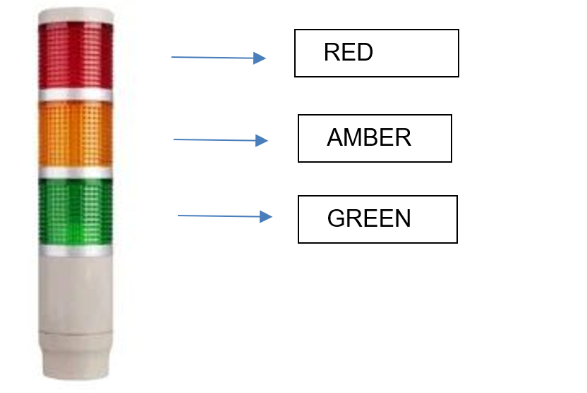

The Robot Cell fence is equipped with a stack light to indicate various states of the Bending Cell. Stack light outputs are controlled by the Press Brake controller based on the current state of the cell.

RED Light – 1. Always ON – Machine in Emergency Stop/ Error State.
Blinking – Robot in T2 Mode.
AMBER Light - 1. Always ON – ROBOT In Manual Mode (T1).
Blinking Alternatively with RED – Robot in T2 Mode.
GREEN Light - 1. Blinking - Robot in Automode and machine in ready state to start program.
Always ON – Robot Program running in Auto Mode.